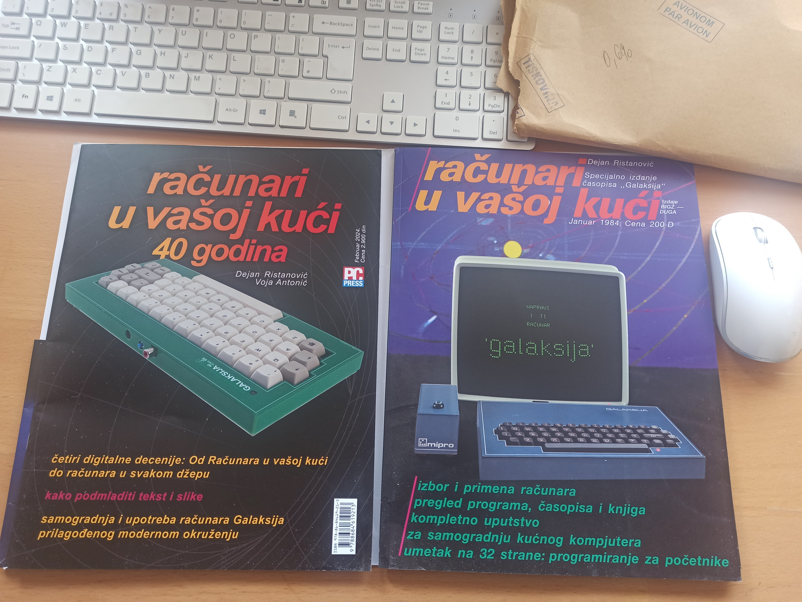
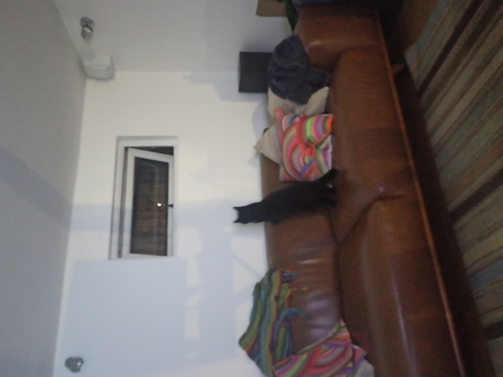
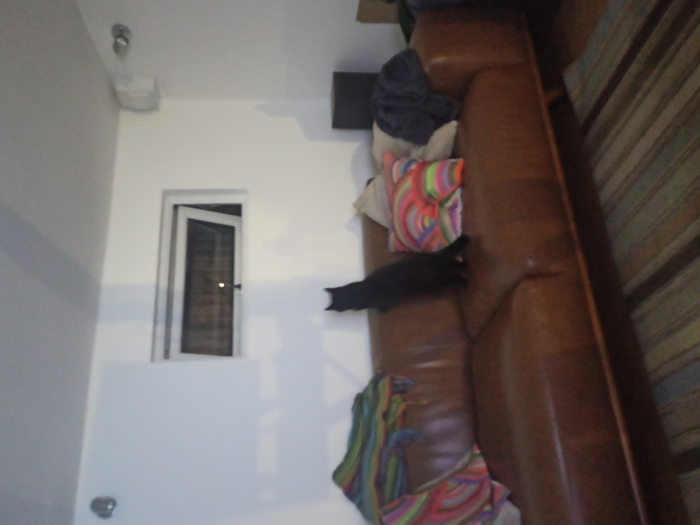
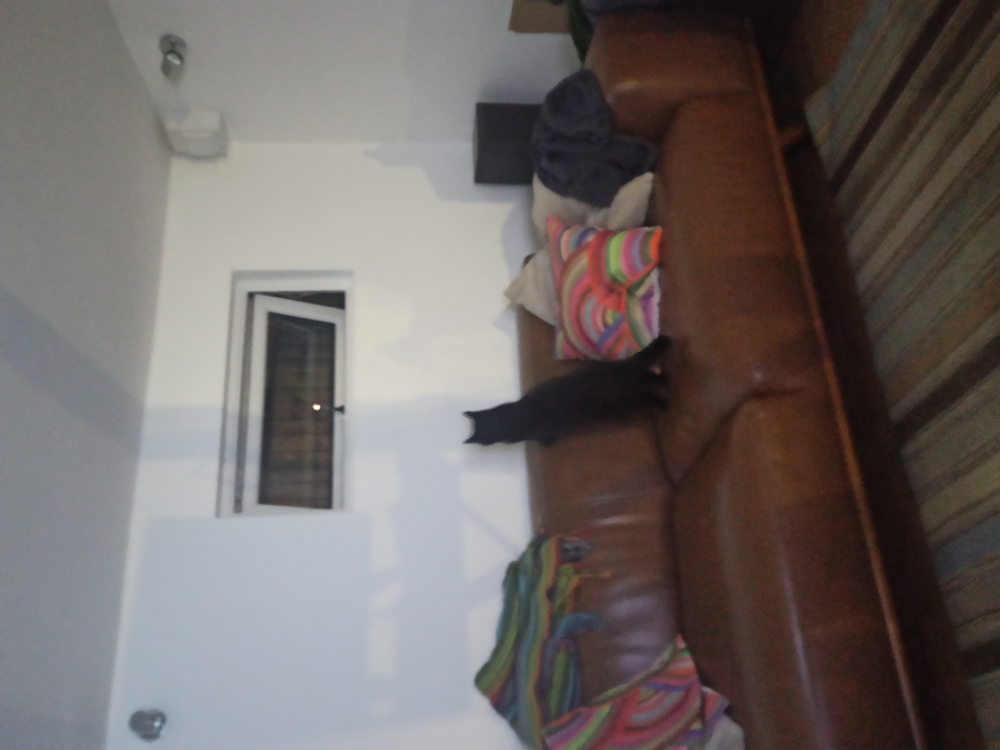

My computer $HOME
I spend most of my time typing into a computer, reading on the computer screen, watching videos or listening to audio playing on a computer, talking and seeing other poeple through a computer screen.
Nowdays I use Xubuntu LTS, on the desktop and on my laptops. I update every 3-4 years to the new version, but other than that - it's completely uneventful. The Xfce GUI changes only slowly if ever - and that's how I like it.
On the computers used by rest of the family I put Ubuntu as it's better looking. They also use Windows desktops and Macbooks for laptops. The Macbooks with the M1-M4 ARM CPU-s have spectacular battery life in addition to great screens. I am looking forward to the day when I add an ARM Thinkpad to my daily use. Have couple of Thinkpads for the RAM I need. The RAM keeps me away from the Macbooks - otherwise I would have switched my now. Initially I had 32GB, but now that has grown to 64GB. Can't imagine to have less and would like to move to 128GB on the laptop. Have had that much on the desktop for 10 years now. That's my first need: get as much RAM as I can. And the 2nd - get as fast an SSD and better NVME as I can. My daily job involves lots of data, and keeping all data needed in memory is the best UI for me. And when not in memory - then on ssd drives and preferably nvme ones.
Daily I ive in bash and vim mostly inside screen (the multiplexer) inside terminator (the terminal emulator). I use the shell tools, incl awk (that I like) and the rest of the gnu shell tools (grep, sed), git, gcc and g++, make, ssh, rsync, rcopy, Spyder, python, Visual Studio Editor, Cursor (ai), Firefox, Thunderbird, Chrome, Edge, Double commander, Evince, VLC player. I like them all - my life would be worse if these free software tools didn't exist. Thank you GNU software, thank you Linux, thank you FSF.
In my daily job I write quant trading systems and frameworks. I use mix of C/C++, matlab in the past now octave and python with numpy (and pandas), scripting in bash, awk, plotting in gnuplot, data fetching in sql, kdb.
Everything that I do more then few times on the command line, I "can" it into a bash alias or function, and put in my .bashrc. In part to document and not forget. I love that commnad search works, I can type $ xyz
I keep my dot rc files under git and that's worked without fuss. Looks like this:
# Keep dot files and other config in git (https://news.ycombinator.com/item?id=11070797).
# Step 1: $ git init --bare $HOME/.githome.
# Step 2: make function (rather than alias to allow for composition like $ GIT=githome gilg; change dir so paths work independent of the current dir):
githome() { (cd "$HOME" && git --git-dir="$HOME"/.githome/ --work-tree="$HOME" "$@";) }
# Step 3: disregard files by default, only track explicitly added files: $ githome config status.showUntrackedFiles no.
# Now use the usual git commands prefixed by githome: $ githome status; githome add .vimrc; githome commit -m "Add vimrc".
# Issue 1: Can not commit links. For host specific dirs, woraround: 1) move dir to dir-host; 2) link dir to dir-host; 3) add dir-host to git. Example with ~/.config dir:
# ljubomir@hostA:~$ l -d .config*
# lrwxrwxrwx 1 ljubomir ljubomir 14 Mar 24 14:26 .config -> .config-hostA/
# drwx------ 34 ljubomir ljubomir 4.0K Mar 29 12:24 .config-hostA/
# drwx------ 3 ljubomir ljubomir 4.0K Mar 24 14:52 .config-hostB/
# Issue 2: To pull from host with temporary IP edit $ vi .githome/config, change the IP below:
# [remote "hostC"]
# url = ljubomir@192.168.1.117:.githome
# fetch = +refs/heads/*:refs/remotes/hostC/*
# List all files under management and pretty print if run without args, githome otherwise. (https://mitxela.com/projects/dotfiles_management)
giho-ls() {
(cd /
githome ls-files | while read i; do
echo -n "$(githome -c color.status=always status "$i" -s | sed "s#$i##")"
echo -e "¬/$i¬\e[0;33m$(githome -c color.ui=always log -1 --format="%s" -- "$i")\e[0m"
done
) | column -t -s¬
}
# Have "local -" to make option "set -x" local to the function only
giho() { local -; set -x; githome "$@"; }
giho-fetch-hostA() { local -; set -x; githome fetch "$@" hostA master:hostA; }
giho-merge-hostA() { local -; set -x; githome merge "$@" hostA; }
giho-push-hostA() { local -; set -x; githome push --follow-tags "$@" hostA master:$(hostname -s); }
Other canned common git commands look like:
# Git shortcuts. Take the "git" command from the environment via GIT var to allow for goodies:
# - use with githome: $ GIT=githome gist
# - color terminal (off by default): $ GIT="git -c color.status=always" gist |m
gi() { ${GIT:-git} "$@"; }
gist() { ${GIT:-git} status "$@"; }
gidf() { ${GIT:-git} diff "$@"; }
gilg() { ${GIT:-git} log -C --name-status --pretty="%h %ae %ai : %s" "$@"; }
gilgt() { ${GIT:-git} log -C --oneline --stat --decorate "$@"; }
gi-fetch-hostA() { local GIM=${GIM:-master}; local -; set -x; ${GIT:-git} fetch "$@" hostA ${GIM}:hostA/${GIM}; }
gi-merge-hostA() { local GIM=${GIM:-master}; local -; set -x; ${GIT:-git} merge "$@" refs/heads/hostA/${GIM}; }
gi-push-hostA() { local GIM=${GIM:-master}; local -; set -x; ${GIT:-git} push --follow-tags "$@" hostA ${GIM}:"$(hostname -s)"/${GIM}; }
I like and use .bashrc search-previous-command all the time via .inputrc:
$if Bash
# Filename completion/expansion
set completion-ignore-case on
set show-all-if-ambiguous on
# Append "/" to all dirnames
set mark-directories on
set mark-symlinked-directories on
# Match all files
set match-hidden-files on
$endif
# Ctrl-Left
"\e[1;5D": backward-word
# Ctrl-Right
"\e[1;5C": forward-word
# Up
"\e[A": history-search-backward
# Down
"\e[B": history-search-forward
Usually I don't customize anything much. I spend most of the time on the command line or in vim anyways, the GUI is mostly vanialla whatever Xfce decides. I notice now my PS1 etc have grown over time:
PS1='${debian_chroot:+($debian_chroot)}\[\033[01;34m\]\u@\h\[\033[00m\](${STY}:${WINDOW}):\[\033[01;34m\]\w\[\033[00m\]\$ '
PROMPT_COMMAND='echo -ne "\033]0;${XUSER} (${STY:-$$}) ${VIRTUAL_ENV_PROMPT} ${USER}@${HOSTNAME}:${PWD}\007"'
A researcher, an explorer - usually they need a log book. At work as a researcher I always kept a log book, usually using 2 facing pages per 1 week.
At $HOME have settled for a ~/logBook that's plain ascii text file under git. Love git for versioning so I don't worry that I will delete destroy something by mistake. Also great for synchronisation and replication to various boxes - done with $ git fetch/merge/push. I have FIXME TODO DONE DONTDO sections. They are ^searchable in vim, e.g. /^TODO (enter). The entries are short-ish, sentence or 2 or 5, separated by empty line. I start entries with "- " so to search easily with /^- in vim. Entries move wholesale between sections, the idea is to move them around without further editing. Entry that spends enough time in TODO without moving to DONE is moved to DONTDO after some time.
I have spent most of my adult life with and around computers. The 1st home computer I saw was ZX-Spectrum 16K that my school friend got before me in the last year in elementary school probably 1982-83. Remember the prices still: ZX-Spectrum 16K was £100, 48K model was £130. Commodore C64 was £200. Latter I managed to persuade my parents to buy me a C64 probably around 1985. I learned Basic and 6502 assembler on it, mostly from the Racunari u vasoj kuci (Computers in Your Home) magazine (recent 40 years anniversary reprint; click to zoom).
In 1987 I finished High school and enrolled BSc undergraduate studies in Electrical Engineering, that turned into Computer Science from year 3 onwards. (studies were 4.5yrs+diploma work) Did 1yr National service in-between High School and University, and there I programmed pocket computers HP-71B, Sharp PC-1500 (with the tiny printer), Apple II clone with a Z80 CP/M board and a hard disk (!! remember CP/M had partitions, but no directories?). Once back home and at uni from 1988, I finally got my 1st PC (don't recall the year exactly) AT with Intel 80286 CPU, 1MB RAM, Hercules graphics card, 20MB HDD, that probably run MS-DOS 5 or similar. I squeezed a 2400bps modem in the budget too (without MNP5 error correction or compression). The modem proved an excellent decision as it got me into the online world of BBS (e.g. Sezam) and latter Internet. All that was financed bought paid for by my generous parents.
Since - I've never been too far from a computer for any significant time. Nowdays it's mostly Linux (Xubuntu, CentOS, Ubuntu), for a long time earlier it was MS-DOS/Windows (3.1-95-XP-10, cygwin), various Unix too (Solaris, HP-UX, Ultrix, AIX), as well as VAX VMS. And of course - we all carry a magical shiny slabs in our pockets that are super-computers of the old. Mostly varous Android for me, but it's looking like I'll be switching over to iPhone for the AI Neural Nets hardware.
These days I 'm mostly at my desk, in a garden office. Sometimes I get a visitor or two or three. (click to zoom)

 

LJ HPD Thu 10 Oct 23:00:52 BST 2024